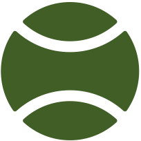

HALLO
Ich bin Linh, leidenschaftliche
Meine Leidenschaft für das Programmieren entdeckte ich
mit Kursen in Machine Learning und Data Science.
Seitdem begab ich mich auf eine Reise, in der ich mich
mit vielfältigen Projekten beschäftigte, die mich schließlich
zum Fullstack Engineering führten. Mein Ziel ist es, meine
Leidenschaft im Beruf auszuleben und meine
Programmierfähigkeiten kontinuierlich weiterzuentwickeln.
ÜBER MICH
Beweg die Maus
über die Icons
für mehr Infos.
2000
2013
2019
2020
2021
Tennis ist ein sehr wichtiger Lebensbestandteil
für mich und darf daher in den Informationen
über mich nicht fehlen. Ich habe bereits im
Kindesalter angefangen und spiele seitdem noch
regelmäßig und aktiv im Verein. Natürlich nur
zum Spaß und als sehr guten Ausgleich zum
Berufsleben.
Nach der Grundschule ging es für mich auf das
Französische Gymnasium in Berlin, wo ich mein
Abitur mit 1,0 abgeschlossen habe (ich muss
hier leider ein wenig angeben, denn danach
waren meine Noten etwas schlechter).
An der TU Berlin studierte ich Biotechnologie
und erhielt dort meinen Bachelor sowie
Master of Science. Den Notendurchschnitt
vom Abitur konnte ich hier leider nicht halten,
aber Noten sagen ja bekanntlicherweise
wenig aus. Dafür waren meine Abschluss-
arbeiten sehr gut! Mehr dazu erzähle ich
natürlich gerne in Person.
Nach dem Studium ging es ab ins Berufsleben!
Ich fing in einem Biotech-Unternehmen in der
Forschung & Entwicklung an und sammelte dort
meine ersten Berufserfahrungen. Von der
Optimierung von Produktionsprozessen über
Entwicklung von Produkten basierend auf
humanen Biomaterialien hin zur Validierung
von Messsystemen für die Qualitätssicherung
bearbeitete ich vielseitige Projekte.
Ist der Satz einigermaßen verständlich?
Wenn nicht, erläutere ich das sehr gerne in
einem Gespräch!
Hier beginnt der spannende Teil!
Vor ein paar Jahren fing ich an, mich für das
Programmieren zu begeistern. Anfangs lernte
und programmierte ich hauptsächlich in meiner
Freizeit. Dann habe ich es geschafft, meine
Programmierfähigkeiten bei der Arbeit einzu-
bringen. Auf jeden Fall fing dadurch neues
Kapitel für mich an.
...to be continued...
MEINE SKILLS
Frontend
html, css und javascript
Als Beweis möchte ich gerne auf
diese Webseite verweisen. Ich hoffe
allerdings, du hast die Webseite
auf dem Desktop geöffnet. Die
mobile Version ist in der Entwickung.
Python
für Data Science und
Machine Learning